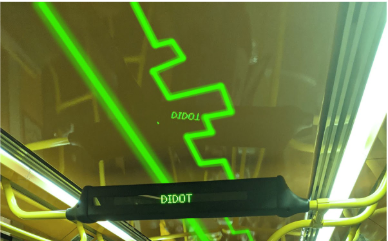
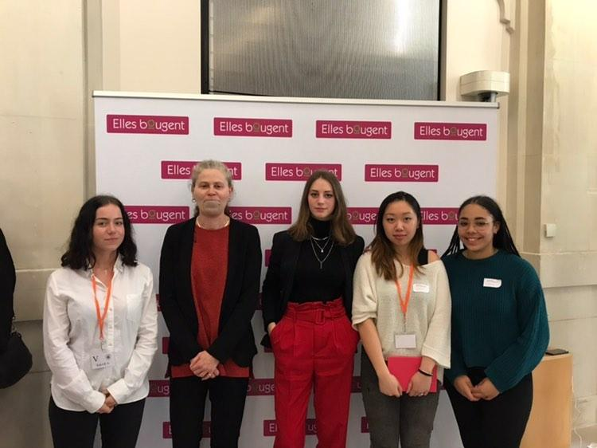

Laura Tertre
Etudiante à HETIC en PMD (Prépa Mastère Digital) Bac +3
Situé à Montreuil, 93210Recherche un stage Développeuse Web pour une durée minimum de 3 mois.
Disponibilité : mi-juin à janvier Permis B. Mobile dans Paris intra-muros ou banlieue parisienneRecherche un contrat d'apprentissage en tant que Développeuse back-end.
Rythme : 3/1 semainesA partir de Janvier (possibilité de commencer 2 mois avant)
Master CTO & Tech Lead à HETIC
Mes formations
PMD (Prépa Mastère Digital) Bac +3 à HETIC
situé à Montreuil Acquisition des notions en :- HTML
- CSS
- JavaScript
- UX UI
- WordPress
- PHP
HETIC (Hautes Études des Technologies et l'Informatique et de la Communication)
N°1 des écoles du Web d'après le Figaro. HETIC propose des formations aux métiers d'itnernet, du web et du multimédia.HETIC est une école qui cible la polyvalence opérationnelle.
J'ai effectué une PMD (Prépa Mastère Digital) Bac +3.
Cette formation vise à solidifier et approfondir la culture digitale et les compétences en développement, design et marketing/management.
DUT GEII (Genie Éléctrique et Informatique Industrielle) au CNAM (Conservatoire National des Arts et Métiers) en Alternance
situé à Paris Acquisition des notions en :- C
- Python
- Assembleur
- Info embarquée
- Automatisme et supervision
- VHDL
CNAM (Conservatoire National des Arts et Métiers)
Fort ancragre territorial en France métropolitaine et ultramarine, mais aussi à l'international. HETIC propose des formations aux métiers d'itnernet, du web et du multimédia.J'ai effectué un DUT GEII (Genie Éléctrique et Informatique Industrielle) en alternance.
Cette formation vise à former des techniciens supérieurs aux métiers de l'électronique et de l'informatique embarquée, de l'électrotechnique et de l'informatique industrielle.
Mes projets

Maquette et Intégration d'une refonte d'un site e-commerce
effectué à HETIC Refonte du site Aroma-zone après un benchmark du site.Prise en compte de l'aspect UX et UI.
- Utilisation d'un Burger Menu en JavaScript en version mobile
- Utilisation d'un panier en JavaScript

Animation créatif en HTML/CSS/JS
effectué à HETIC Utiliser un maximum d'animations, transitions ou d'interactions en CSS et/ou JS.- Utilisation de bouton interactifs en JavaScript
- Utilisation de transitions en CSS
- Non responsive

Week-End Challenge RATP en paternariat avec HETIC, Web School Factory et Strate
effectué à la Web School Factory, du 27 au 29 février 2020 3 jours... 36h pour réfléchir à un concept, l'appronfondir et le présenter devant un jury tout en pensant au côté viable et utile.- Expérimenter une période de rush
- Développer une idée, un concept
- Confronter ses idées et appronfondir son concept

Challenge InnovaTech 2020 organisé par l'association Elles bougent
effectué au Ministère de la Transition écologique et solidaire le 5 mars 2020 Quatrième édition du Challenge Innovatech2020. Challenge intergénérationnel rassemblant des équipes composées de marraines, d'étudiantes et de lycéennes.- Utilisation de bouton interactifs en JavaScript
- Utilisation de transitions en CSS
- Non responsive
Maquette et Intégration d'une refonte d'un site e-commerce
effectué à HETIC
A travers un benchmark et une recherche utilisateur à l'aide d'interview,
nous avons imaginer une maquette qu'on a intégré.
- HTML
- CSS
- JavaScript
Animation créatif en HTML/CSS/JS
effectué à HETIC
Utiliser un maximum d'animations, transitions ou d'interactions en CSS et/ou JS.
- HTML
- CSS
- JavaScript
Week-End Challenge RATP en paternariat avec HETIC, Web School Factory et Strate
effectué à la Web School Factory, du 27 au 29 février 2020 Proposer des idées, les confronter et les appronfondir. A travers un benchmark, des interviews utilisateurs nous avons imaginer un concept en équipe de 5. 36 heures qui se font ressentir sur une nuit blanche dédiée à la production d'une maquette du concept.- Idées
- Viable & Utile
- Design
- Pitcher
Challenge InnovaTech 2020 organisé par l'association Elles bougent
effectué au Ministère de la Transition écologique et solidaire le 5 mars 2020 62 participantes réunies pour inventer ensemble des solutions selon quatre thèmes distinctifs. Les thèmes de ce Challenge étaient : Les thèmes étaient attribués aléatoirement. Notre équipe composée d'une marraine, d'une étudiante et de trois lycéennes est tombé sur le thème d'Alimentation intelligente.Notre équipe propose une application nommée FoodAdapt, qui proropose des menus par rapport à vos besoins tout en proposant des produits locaux.
- Idée
- Concept
- Pitcher